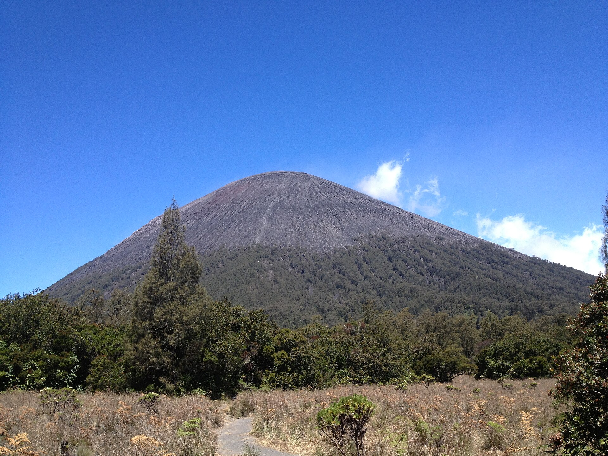
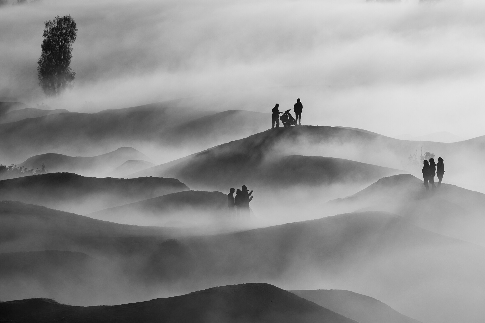

Seven Indonesian volcanoes. Real trail data. Tools that keep you safe on the mountain.
Browse 7 peaks from Java to Lombok
GPX upload, elevation profiles, supply calculator
Built for Indonesian hikers, with verified data
How was your hike? Rate the app
Pick a mountain and start planning
Drop a track file and see distance, ascent, descent, and estimated hiking time. Works with trkpt and rtept.
Track your position on the route during the hike. No map tiles needed, works offline.
Calculate food, water, and gear for your group size and trip duration. Per-mountain checklists included.

Help Pendaki is a hiking planner for Indonesia's volcanoes. We provide trail data, GPX analysis, and supply calculations for seven major peaks.
All mountain facts carry a source and verification date. Data is stored in your browser. When you're ready, the same tools work with live backend data.
No account required. No tracking. Just the information you need to climb safely.